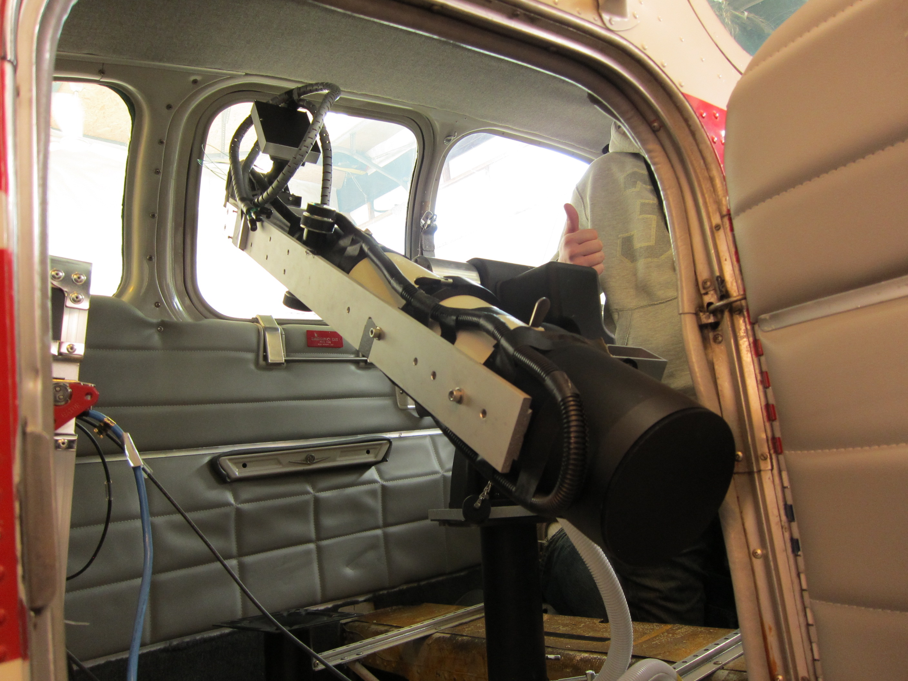

Spontaneous Superradiance from Single Diamond Nanocrystals
Sarah Kaiser, Carlo Bradac, Mattias Johnsson, Matthew van Breugel, Ben Baragiola, Rochelle Martin, Mathieu L. Juan, Gavin Brennen, Thomas Volz
Department of Physics and Astronomy, Macquarie University
ARC Centre for Engineered Quantum Systems


Aside: Research background

Motivation
Cooporative behavour of NV in Nanodiamonds

Centers must be indishtinguishable
- spatial: $V << \lambda^3$
- spectral
- spin manifold
Modeling Cooporative Effects
How to describe cooporation?
Dicke States
doi:10/cbq3mcN, spin conserving systems:
$|J,M\rangle =\sqrt{\frac{(J+M)!(J-M)!}{(2J)!}}\sum_{perm}|\underbrace{\uparrow\uparrow\uparrow...}_{\text{J+M}}\underbrace{\downarrow\downarrow\downarrow...}_{\text{J-M}}\rangle$Example: Dicke States
| $M,~N=3$ | |
|---|---|
| 3/2 | $|\uparrow\uparrow\uparrow\rangle$ |
| 1/2 | $|\uparrow\uparrow\downarrow\rangle+|\uparrow\downarrow\uparrow\rangle+|\downarrow\uparrow\uparrow\rangle$ |
| -1/2 | $|\uparrow\downarrow\downarrow\rangle+|\downarrow\uparrow\downarrow\rangle+|\downarrow\downarrow\uparrow\rangle$ |
| -3/2 | $|\downarrow\downarrow\downarrow\rangle$ |
Enviromental interactions